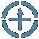
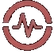

Unified dashboard
See priorities, schedule, momentum, commitments, and key personal signals in one place.
LifeOps command center
A unified personal operations platform for tasks, habits, projects, finances, health, and goals.
The problem
The average knowledge worker uses 9-12 different apps every day, but those tools rarely share data or context.
Tasks, habits, projects, goals, finances, health data, contacts, and calendars live in separate silos.
People spend more time managing their tools than doing their work.
Constant context switching makes it feel like something is always slipping through the cracks.
"I sat in front of integrated dashboards all day at work, then came home and tried to run my personal life with sticky notes and three calendars that didn't talk to each other."
LifeOps
LifeOps consolidates tasks, habits, projects, goals, finances, health data, contacts, and calendar into one integrated command center.
See priorities, schedule, momentum, commitments, and key personal signals in one place.
Start the day with concise operational context instead of hunting through disconnected apps.
Designed for real life: capture, review, and keep moving even when connectivity is uneven.
Built to work across desktop, tablet, and mobile without losing the command-center feel.
"You are the pilot. LifeOps is the instrument panel."
Product ecosystem
Syndral is building an ops-grade suite around LifeOps, with focused modules planned for money, attention, movement, health, and travel.

The central command center for tasks, habits, projects, goals, calendar, contacts, finances, and health signals.
Personal finance visibility for budgets, recurring commitments, trends, and money decisions.
Attention planning for deep work, context recovery, routines, and execution windows.
Location-aware planning for errands, movement, travel, and real-world logistics.

Health and recovery context for sleep, training, habits, and sustainable performance.
Travel and aviation-inspired operational tools for movement, readiness, and situational awareness.
Early access
Get early access to LifeOps.